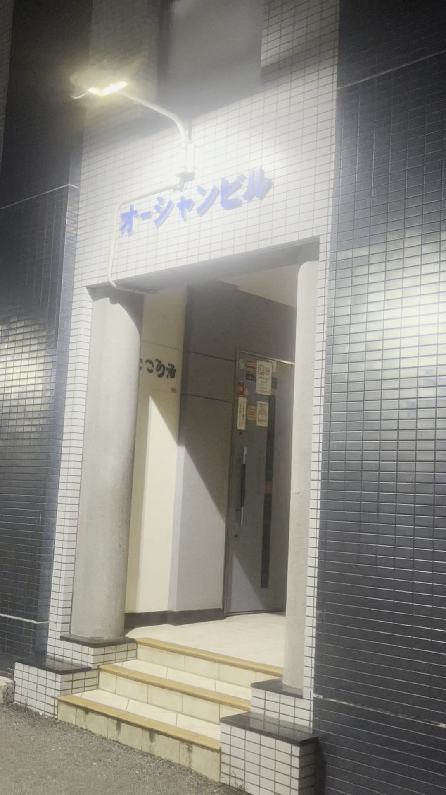
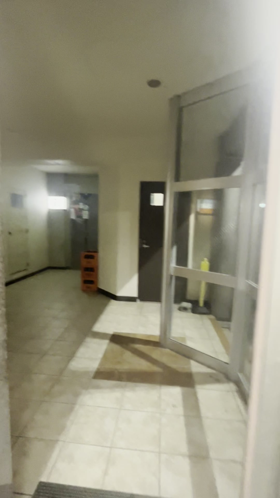
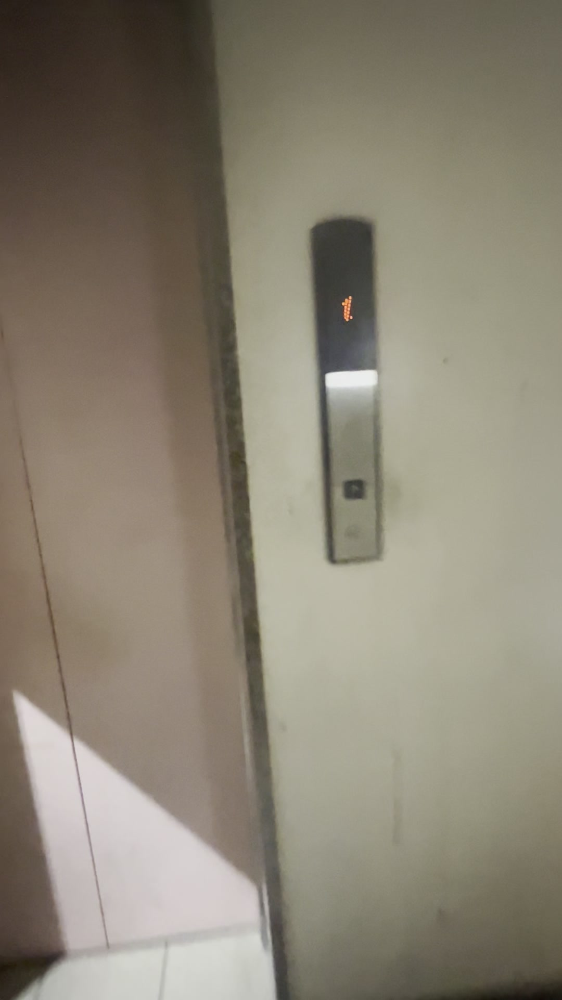
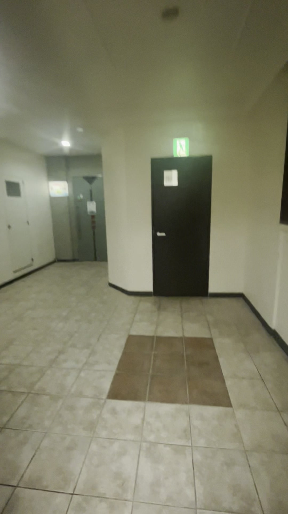

From the entrance to 3F, Room 3-A
Agayha Studio is on the 3rd floor of Ocean Building in Misakicho, Ishigaki. Enter on the 1st floor and take the elevator to the 3rd floor.

Enter Ocean Building
Use the first-floor entrance of Ocean Building at 11-11 Misakicho.

Walk to the elevator
Continue inside from the entrance toward the elevator lobby.

Take the elevator to 3F
Enter the elevator and select the 3rd floor.

Continue to Room 3-A
Exit on the 3rd floor and continue to Room 3-A, where Agayha Studio is located.